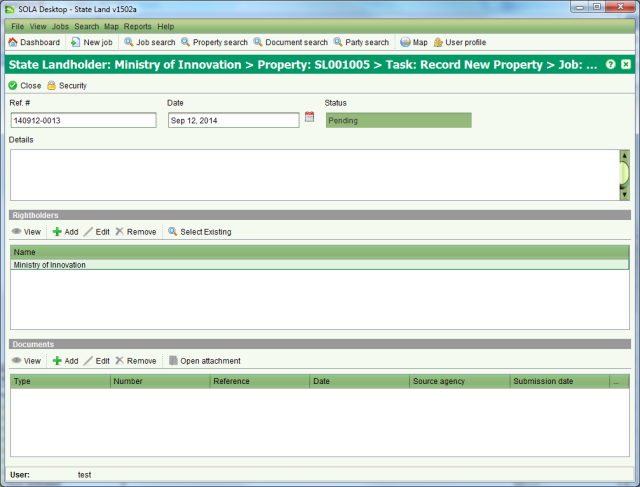

The Rightholder Interest screen is used to display information for interests that have
rightholders such as State Landholder, Claims, Customary rights, etc. It can be accessed from
the Interests tab on the Property Details screen by selecting an appropriate interest to view
and clicking View or
View or  Edit.
Edit.

Rightholder Interest
You can enter the reference number, date, general details and the details of any rightholders for the interest as well as link any relevant documents. If the interest has subtypes configured, the Purpose / Type dropdown will also display allowing you to optionally choose a subtype.
To create, change or cancel a rightholder interest you must first lodge a job with the appropriate task e.g. Record New Property, Maintain Property, Record Interest, Change Interest, Cancel Interest, Record Claim, Change Claim or Cancel Claim.